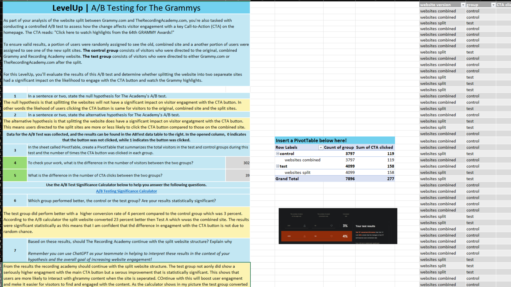

FeaturedGlobal Career Accelerator
Fall 2025
Strategic Data Analysis & A/B Testing
Modeled a controlled A/B test for the Recording Academy validating a 23% CTA conversion lift. Engineered relational data pipelines proving ASICS referred customers drove 104% more revenue ($762K vs. $372K). Executed BART Transit time-series ridership analysis to isolate peak commuter hours.